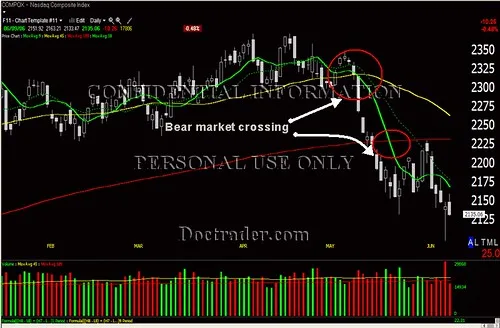
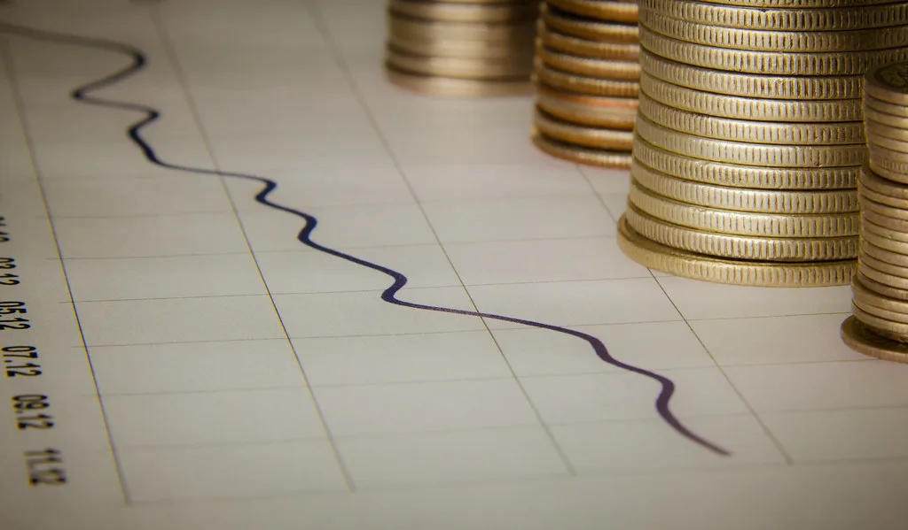

국내 증시가 27일 큰 폭으로 반등했다. 코스피는 전 거래일보다 204.47포인트(4.34%) 오른 4915.68에 거래를 마쳤다. 전날 4711선까지 밀렸던 지수는 하루 만에 200포인트 넘게 오르며 3거래일 만에 4900선을 되찾았다. 코스닥지수도 8.13% 급등한 708.99로 마감해 700선을 회복했다. 장중 코스닥 시장에는 프로그램 매수호가 효력을 잠시 멈추는 매수 사이드카가 발동되기도 했다.
이날 반등을 이끈 것은 외국인이었다. 유가증권시장에서 외국인은 약 1조1300억원어치를 순매수한 것으로 집계됐다. 매체별 집계에 따라 1조1256억원에서 1조1358억원까지 수치에 조금씩 차이가 있지만, 9월 초 이후 가장 큰 규모라는 분석이 나왔다. 그동안 이어진 외국인 매도 흐름이 일단 멈췄다는 신호로 받아들여지는 대목이다. 기관도 약 2300억원대 순매수로 힘을 보탰다. 반면 개인은 약 1조7700억원을 순매도하며 차익을 실현하는 모습을 보였다.

업종별로는 반도체 대형주가 지수 상승을 주도했다. 시가총액 비중이 큰 삼성전자와 SK하이닉스가 나란히 강세를 보이면서 코스피 전체를 끌어올렸다. 간밤 뉴욕증시에서 AI·기술주와 반도체주가 반등했다는 소식이 투자 심리를 개선하는 데 영향을 준 것으로 풀이된다. 최근 AI 투자 과열 논란 속에 반도체주가 크게 흔들렸던 만큼, 낙폭이 컸던 종목을 중심으로 저가 매수세가 몰렸다는 해석도 나온다.
정책 기대감도 한몫했다. 금융당국이 오는 30일 시장안정을 위한 긴급 점검회의를 추진하는 것으로 알려지면서, 증권시장안정펀드 가동 가능성에 대한 기대가 커졌다는 보도가 이어졌다. 증안펀드는 급락장에서 금융기관들이 공동으로 자금을 모아 주식을 사들여 시장을 떠받치는 장치로, 실제 투입 여부와 규모는 아직 정해지지 않았다. 당국이 내놓을 구체적인 대책 내용에 따라 시장 반응은 달라질 수 있다.

이번 반등은 이달 들어 이어진 급격한 조정 끝에 나왔다. 코스피는 이달 5일 하루에만 5% 넘게 떨어지며 5300선대로 밀려났고, 이후에도 등락을 거듭하다 지난 26일에는 4700선까지 내려앉았다. 외국인의 대규모 매도와 AI 관련 규제 우려 등이 하락 요인으로 거론돼 왔다. 하루 사이 4%대 반등은 이 같은 낙폭을 일부 만회한 것이지만, 이달 초 수준과 비교하면 여전히 거리가 있다.
시장에서는 이번 반등이 추세 전환으로 이어질지에 대해 신중한 시각이 많다. 외국인 매수세가 이어질지, 반도체 업황과 AI 투자에 대한 의구심이 해소될지가 관건으로 꼽힌다. 하루에 지수가 4~8%씩 오르내리는 장세는 그만큼 변동성이 크다는 뜻이기도 하다. 개인 투자자가 이날 대규모로 순매도한 것도 반등을 활용해 손실을 줄이거나 차익을 챙기려는 수요가 많았다는 의미로 해석된다.
투자자 입장에서는 단기 급등락에 휩쓸리기보다 보유 자산의 위험 수준을 점검할 필요가 있다는 조언이 나온다. 다음 주 열릴 것으로 알려진 금융당국 점검회의 결과와 해외 증시 흐름이 당분간 국내 증시의 방향을 가를 변수가 될 전망이다. 변동성이 큰 장세에서는 분산 투자와 분할 매매 같은 기본 원칙이 더욱 중요해진다는 목소리도 나온다.